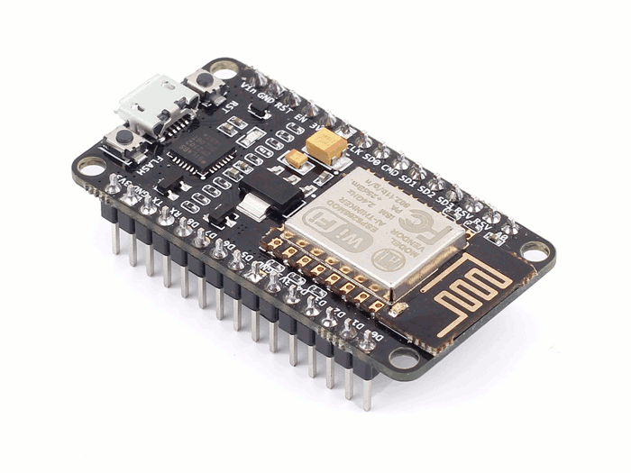

original image: zeptobars.com
original image: zeptobars.com
original image: zeptobars.com
Originally came to prominence as a WiFi controller for AVR and similar, but ...
| AVR (Arduino) | ESP8266 | ARM / Broadcom (RPi 2) |
|---|---|---|
| ATMega328P | Tensilica Xtensa LX106 | Cortex A53 |
| 8 bit | 32 bit | 32 bit |
| 1 core | 1 core | 4 core |
| 20 MHz | 80-160 MHz | 900 MHz |
| 2KB RAM | 160KB RAM | 1GB RAM |
| 32KB Flash | DIO/QIO Flash | MicroSDHC |

original image: adafruit.com
original image: adafruit.com

original image: adafruit.com

image: seeedstudio.com
github: themadinventor/esptool
$ git clone https://github.com/themadinventor/esptool $ cd esptool $ sudo python setup.py install $ esptool.py version $ esptool.py write_flash 0 image.bin
$ git clone --recursive https://github.com/pfalcon/esp-open-sdk $ sudo apt-get install make unrar autoconf automake \ libtool gcc g++ gperf flex bison texinfo gawk \ ncurses-dev libexpat-dev python-dev python python-serial \ sed git unzip bash help2man wget bzip2 libtool-bin $ cd esp-open-sdk $ make
$ xtensa-lx106-elf/bin/xtensa-lx106-elf-gcc --version
xtensa-lx106-elf-gcc (crosstool-NG
crosstool-ng-1.22.0-55-gecfc19a) 4.8.5
$ export PATH=`realpath xtensa-lx106-elf/bin/`:$PATH
#include <esp8266.h>
#include "httpd.h"
#include "httpdespfs.h"
#include "espfs.h"
#include "webpages-espfs.h"
#include "../vm/virtual.h"
#include "cgiwebsocket.h"
void myWebsocketConnect(Websock *ws) {
ws->recvCb = myWebsocketRecv;
ws->closeCb = myWebsocketClose;
}
HttpdBuiltInUrl builtInUrls[]={
{"/", cgiRedirect, "/index.html"},
{"/ws", cgiWebsocket, myWebsocketConnect},
{"*", cgiEspFsHook, NULL},
{NULL, NULL, NULL}
};
static os_timer_t vmExecTimer;
void user_init(void) {
espFsInit((void*)(webpages_espfs_start));
httpdInit(builtInUrls, 80);
os_timer_disarm(&vmExecTimer);
os_timer_setfn(&vmExecTimer, myTimerCallback, NULL);
os_timer_arm(&vmExecTimer, 20, 1);
gpio_init();
}
... and thanks to a successful Kickstarter campaign and Damien George ...

$ git clone --recursive https://github.com/micropython/micropython.git $ cd micropython/mpy-cross $ make $ cd ../esp8266 $ make axtls $ make $ PORT=/dev/ttyUSB0 make deploy
$ cu -l /dev/ttyUSB0 -s 115200
MicroPython v1.8.2-94-g3d19adf on 2016-08-06; ESP module with ESP8266
Type "help()" for more information.
>>> dir()
['uos', '__name__', 'gc', 'bdev', 'vfs']
>>> print("Hello, World!")
Hello, World!
>>>
>>> import machine >>> import time >>> pin2 = machine.Pin(2) >>> pin2.init(machine.Pin.OUT) >>> while True: ... pin2.low() ... time.sleep(0.5) ... pin2.high() ... time.sleep(0.5)
>>> import network
>>> sta_if = network.WLAN(network.STA_IF)
>>> sta_if.active(True)
>>> sta_if.scan()
>>> sta_if.connect("my_ap", "my_password")
>>> import socket
>>> sock = socket.socket(socket.AF_INET)
>>> sock.bind(('0.0.0.0', 80))
>>> sock.listen(5)
>>> sock.accept()
(<socket state=2 timeout=-1 incoming=0 off=0>, ('10.107.1.4', 37464))
$ (cd unix; make axtls; make)
$ unix/micropython -m upip install \
-p esp8266/modules micropython-functools
If you're interested in Microcontrollers / IoT / Robotics:
Nick Moore
Mnemote Pty Ltd
Slides:
Content and images © Mnemote Pty Ltd except where otherwise noted